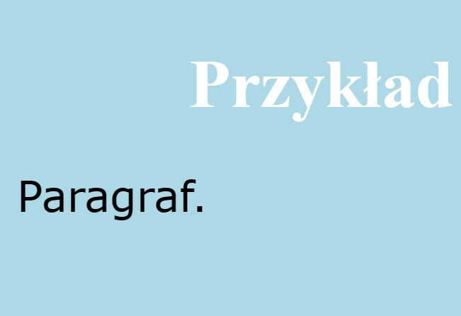
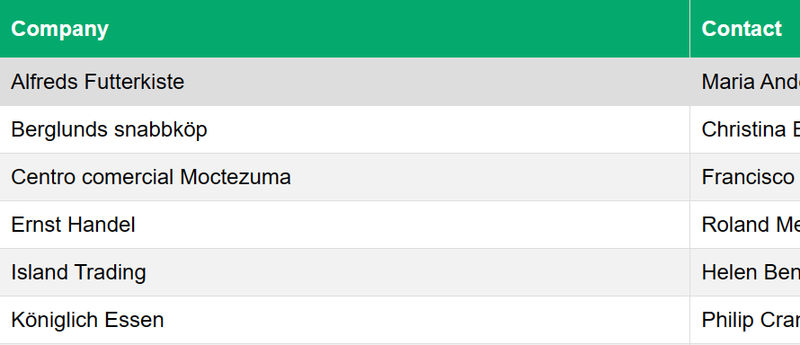

Co to CSS?
CSS, czyli kaskadowe arkusze stylów (od ang. Cascading Style Sheets) to język używany do opisu układu elementów na stronie WWW. Można za jego pomocą zdefiniować wiele parametrów, takich jak rodzaj czcionek, kolor tła, wyrównanie elementów na stronie itp.
Arkusze stylów CSS to zbiór wytycznych, regulujących wygląd danego dokumentu. CSS odpowiedzialny jest za jej prezentację. Ułatwia on niezwykle pozycjonowanie elementów i ma tą przewagę, że może jednocześnie odnosić się do wielu dokumentów. Znaczy to mniej więcej tyle, że z poziomu jednego arkusza stylów możemy kontrolować układ graficzny wielu dokumentów, co znacznie usprawnia wprowadzanie zmian na stronach WWW. Nie musimy edytować każdej podstrony osobno, wystarczy zrobić to w jednym arkuszu CSS. Możemy w ten sposób bardzo szybko zmienić marginesy, obrazki tła, kolory czcionek i inne.
Najbardziej zalecany. Polega na umieszczeniu definicji stylów w oddzielnym pliku o rozszerzeniu .css, a w dokumencie go używającym umieszczeniu instrukcji importującej w części nagłówkowej strony.
W HTML arkusz zewnętrzny jest dołączany przez element ‹link> . Posiada on trzy atrybuty: rel informuje przeglądarkę o rodzaju linkowanego zasobu, type wskazuje rodzaj arkusza stylu. Atrybut href zawiera adres URL arkusza.
Zaletą takiego rozwiązania jest kompletne oddzielenie kodu zawartości od wyglądu. Ponadto przypisanie jednego arkusza do wielu dokumentów oznacza łatwiejszą kontrolę nad wyglądem całości serwisu. Wystarczy zmodyfikować jeden plik .css a znajdzie to odbicie we wszystkich dokumentach w których jest dołączony.
Ze sposobem umieszczania stylów wiąże się pojęcie kaskadowości. Definiuje ona hierarchię źródeł stylów.
Kaskadowość określa, iż w pierwszej kolejności brane są pod uwagę style pochodzące z arkusza zewnętrznego. Te z kolei mogą zostać nadpisane przez style zdefiniowane w arkuszu zagnieżdżonym. Style zdefiniowane 'inline' znajdują się na końcu tego "łańcuszka" jako znajdujące się najbliżej opisywanego elementu strony.
body{
background-color: lightblue;
}
h1{
color: white;
text-align: center;
}
p{
font-family: verdana;
font-size: 20px;
}

#customers {
font-family: Arial, Helvetica, sans-serif;
border-collapse: collapse;
width: 100%;
}
#customers td, #customers th {
border: 1px solid #ddd;
padding: 8px;
}
#customers tr:nth-child(even){background-color: #f2f2f2;}
#customers tr:hover {background-color: #ddd;}
#customers th {
padding-top: 12px;
padding-bottom: 12px;
text-align: left;
background-color: #04AA6D;
color: white;
}
